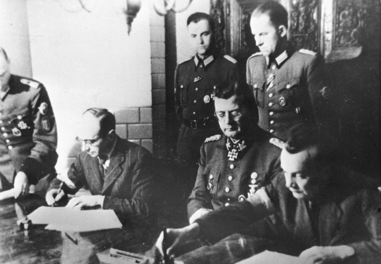
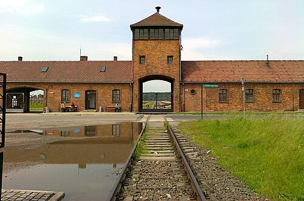
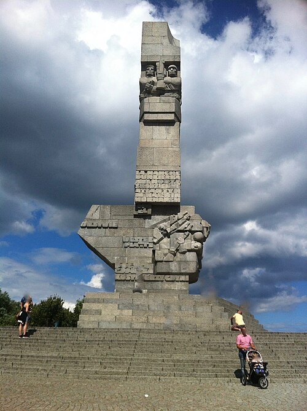

← Powrót
Straty ludnościowe
Polska poniosła jedne z największych strat ludnościowych w czasie II wojny światowej.
Szacuje się, że zginęło około 5,9 – 6 milionów obywateli, co stanowiło około 17% całej populacji kraju.
Najważniejsze dane:
• Około 3 miliony polskich Żydów zamordowanych w Holokauście
• Około 2 miliony Polaków nieżydowskiego pochodzenia
• Setki tysięcy ofiar represji, egzekucji, pacyfikacji i obozów
• Ogromne straty wśród dzieci i ludności cywilnej
Formy represji
Obywatele Polski byli ofiarami masowych egzekucji, wysiedleń, obozów koncentracyjnych,
obozów pracy, głodu, chorób oraz działań wojennych. Szczególnie tragiczne były:
- Holokaust i Zagłada polskich Żydów
- Zbrodnie Wehrmachtu i SS na ludności cywilnej
- Zbrodnia katyńska
- Powstanie Warszawskie i jego konsekwencje
- Masowe deportacje na Syberię
Pamięć
Pamięć o ofiarach II wojny światowej jest kluczowym elementem polskiej historii.
Upamiętniają ją liczne pomniki, muzea, miejsca pamięci oraz inicjatywy edukacyjne.
Galeria
Wybrane zdjęcia związane z Drugą Wojną Światową



Źródło zdjęć: "https://pl.wikipedia.org/wiki/Powstanie_warszawskie", „https://pl.wikipedia.org/wiki/Auschwitz-Birkenau”, https://pl.wikipedia.org/wiki/Westerplatte.